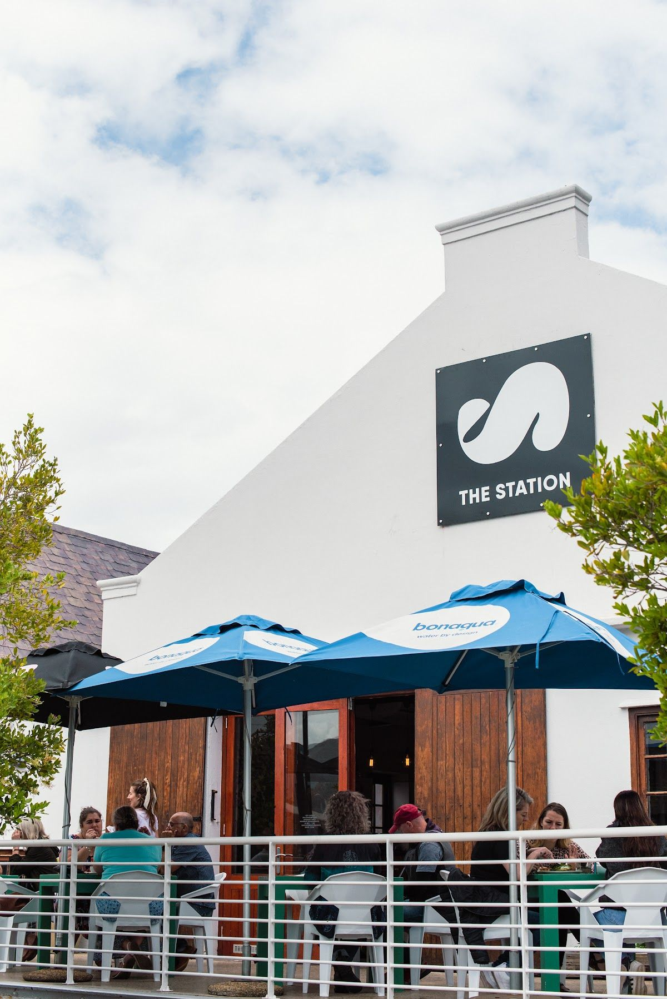
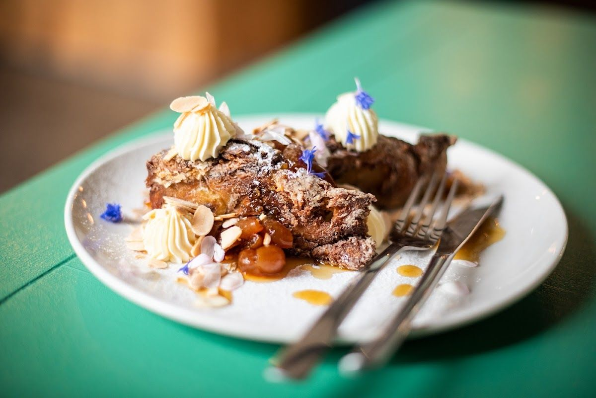
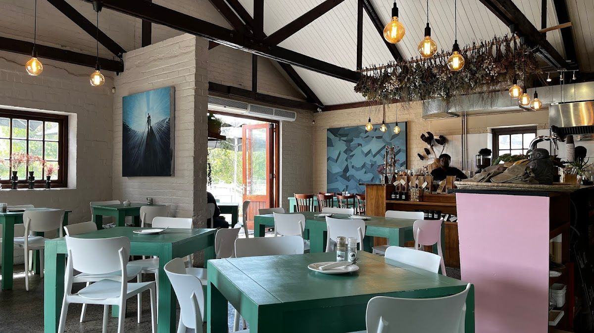
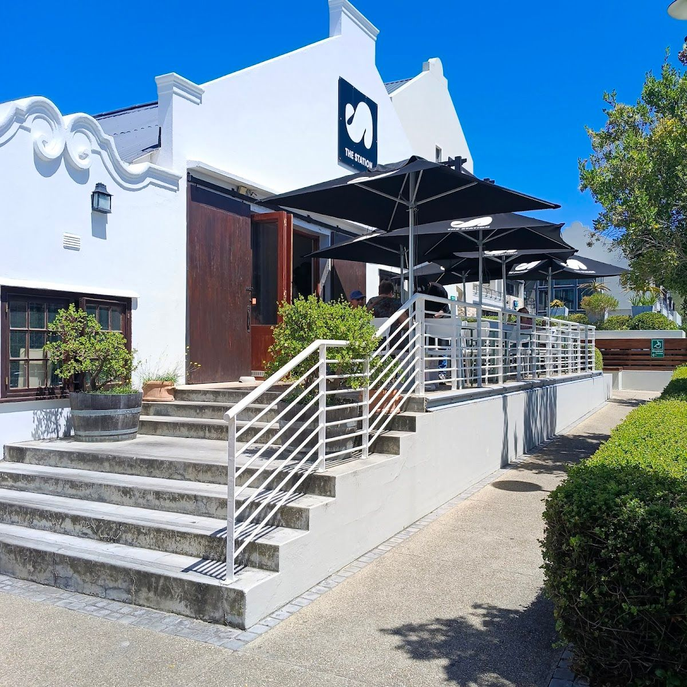

Nestled in the beautiful town of Hermanus, THE STATION BISTRO offers a dining experience that combines stunning views, fresh air, and delectable food. Our bistro is a haven for locals and visitors alike who appreciate a cozy atmosphere and fresh ingredients.
Founded with a passion for quality and community, our bistro has become a beloved spot in the heart of Hermanus. We pride ourselves on using locally sourced ingredients to create dishes that are not only delicious but also reflect the vibrant flavors of South Africa.
At THE STATION BISTRO, we are committed to providing our guests with an unforgettable dining experience. Our team is dedicated to ensuring that every visit is a delightful journey of taste and comfort, making us a trusted choice for both casual meals and special occasions.
Explore our offerings at THE STATION BISTRO, where every dish is crafted to perfection.
Enjoy a delightful dining experience with stunning views and fresh air, complemented by our expertly crafted dishes and warm company.
Here is what our clients say about us.
"A unique and atmosphere rich, but conveniently located restaurant with one of a kind breakfast choices (Tokyo Benedict for example), fresh juices and craft beer. They also have the run of the mills like an English breakfast, pizza or burgers, with the option to get a bit more adventurous if preferred."— Harrie Esterhuyse, ⭐⭐⭐⭐⭐
"We had an absolutely outstanding experience at The Station in Hermanus. The highlight of our evening was without a doubt our waiter, Johann. His knowledge about the food was exceptional – he could tell us in detail how each dish was prepared, the origin of the ingredients, and even explained the process behind the salt they use. He made spot-on recommendations and guided us through the menu with so much passion and professionalism, which truly elevated our dining experience. The vibe of the restaurant strikes the perfect balance between laid-back and sophisticated – relaxed enough to feel comfortable, yet with a touch of elegance that makes the evening feel special. The food itself was simply excellent, beautifully presented, and bursting with flavor. Thanks to Johann’s attentiveness and expertise, combined with the amazing atmosphere and cuisine, this was one of the best dining experiences we’ve had in South Africa. Highly recommended!"— Lena, ⭐⭐⭐⭐⭐
"A hidden gem in the heart of Hermanus! I usually head out of town for a decent breakfast, but my husband and I decided to give this place a try and we absolutely loved it. So much so, we went back again for breakfast, and it was just as impressive. You can tell from the generous portions and rich toppings that they truly care about the quality and overall food experience not just churning out the same generic offerings like so many others. What really stood out was the attention to detail in the preparation, presentation, and most importantly, the taste. Without great flavour, a meal is easily forgotten just another Saturday morning regret and wasted spend. But here, the food lingers in memory for all the right reasons. Johan was absolutely lovely and added to the entire experience. He shared how they source their ingredients and how much of what they serve is made from scratch — and you can really taste the difference. It was an absolute delight to visit. I was thoroughly impressed and would 100% recommend this spot to anyone looking for a standout breakfast in Hermanus. A true gem!"— Gaby Alexfa, ⭐⭐⭐⭐⭐
"⭐️⭐️⭐️⭐️⭐️ The café is beautifully decorated – really cute and full of lovely details! The breakfast was absolutely delicious: the coffee was perfect, the orange juice fresh, and the granola simply amazing. The staff were super friendly and welcoming, and the whole atmosphere was so cozy and inviting. Definitely a place I’d love to come back to – highly recommended!"— Schelly, ⭐⭐⭐⭐⭐
"Excellent food and service. I would highly recommend to anyone who wants a relaxed evening with good wine and food. I tried their roasted courgette and anchovy pizza (Thursdays are 2 pizzas or 2 burgers for R250) and it was delicious! I can’t wait to return and try out all the other dishes."— Abby Raymer, ⭐⭐⭐⭐⭐




We'd love to hear from you — reach out to us anytime.